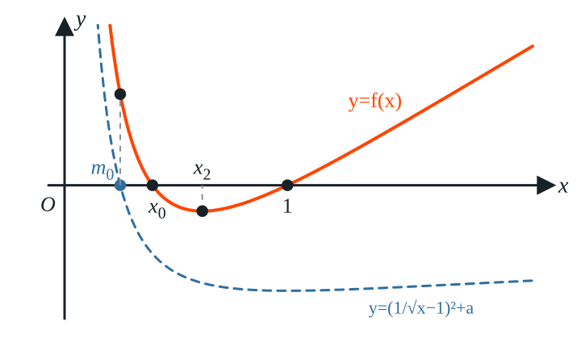
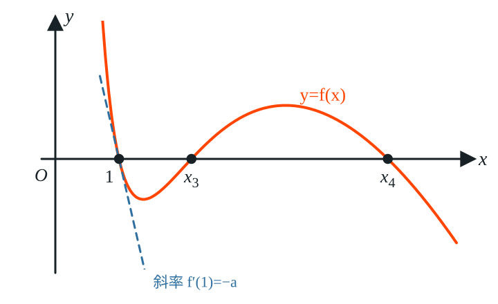
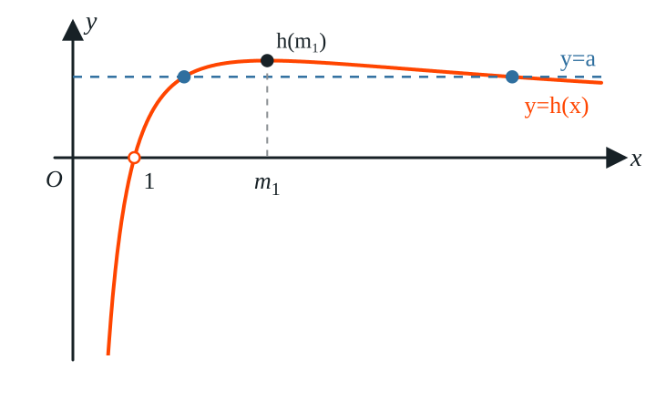

<meta data-alternate="https://freshmark.sunisalex.org/en/" data-article="true" data-canonical="https://freshmark.sunisalex.org/posts/math/derivative-01/" data-description="9. 已知函数 $f(x)=\ln x+\dfrac{1}{x}-1-a(x-1)\ (a\in\mathbf{R})$，则下列四个结论不正确的是（ ） A. $\forall a&lt;0$，$f(x)$ 有极小值 B. $\forall a&lt;0$，$f(x)$ 恰有 2 个零点 C. $\exists a&gt;0$，使得不等式 $f(x)\geqslant 0$" data-freshmark-page data-title="导数小题-01 — Freshmark"><main><header class="container article-header"><a href="/" class="back-link">← 返回全部文章</a><p class="eyebrow article-subject">数学</p><h1>导数小题-01</h1><p class="article-dek">9. 已知函数 <span class="math-expression math-inline" data-math-source="f(x)=\ln x+\dfrac{1}{x}-1-a(x-1)\ (a\in\mathbf{R})"></span>，则下列四个结论不正确的是（ ） A. <span class="math-expression math-inline" data-math-source="\forall a&lt;0"></span>，<span class="math-expression math-inline" data-math-source="f(x)"></span>&#32;有极小值 B. <span class="math-expression math-inline" data-math-source="\forall a&lt;0"></span>，<span class="math-expression math-inline" data-math-source="f(x)"></span>&#32;恰有 2 个零点 C. <span class="math-expression math-inline" data-math-source="\exists a&gt;0"></span>，使得不等式 <span class="math-expression math-inline" data-math-source="f(x)\geqslant 0"></span></p><div class="article-meta"><time datetime="2026-10-11">2026年10月11日</time><span>4 分钟阅读</span><span class="view-count" data-article-view-count hidden>本文访问量 <strong data-article-views></strong></span><a href="index.md" download>下载 Markdown</a><button type="button" class="article-share" data-share-article data-share-text="9. 已知函数 $f(x)=\ln x+\dfrac{1}{x}-1-a(x-1)\ (a\in\mathbf{R})$，则下列四个结论不正确的是（ ） A. $\forall a&lt;0$，$f(x)$ 有极小值 B. $\forall a&lt;0$，$f(x)$ 恰有 2 个零点 C. $\exists a&gt;0$，使得不等式 $f(x)\geqslant 0$" data-share-title="导数小题-01"><span data-share-label>分享文章</span></button><output aria-live="polite" class="visually-hidden" data-share-status role="status"></output></div></header><div class="article-wrap"><aside class="toc"><div class="toc-head"><p>本文目录</p><button type="button" class="toc-toggle" aria-expanded="false" aria-label="展开或收起目录" data-toc-toggle><span class="toc-toggle-label">目录</span><span class="toc-toggle-icon" aria-hidden="true"></span></button></div><nav aria-label="目录" class="toc-links" data-toc-links></nav></aside><article class="prose"><ol start="9"><li>已知函数 <span class="math-expression math-inline" data-math-source="f(x)=\ln x+\dfrac{1}{x}-1-a(x-1)\ (a\in\mathbf{R})"></span>，则下列四个结论不正确的是（　　）</li></ol><p>A. <span class="math-expression math-inline" data-math-source="\forall a&lt;0"></span>，<span class="math-expression math-inline" data-math-source="f(x)"></span>&#32;有极小值</p><p>B. <span class="math-expression math-inline" data-math-source="\forall a&lt;0"></span>，<span class="math-expression math-inline" data-math-source="f(x)"></span>&#32;恰有 2 个零点</p><p>C. <span class="math-expression math-inline" data-math-source="\exists a&gt;0"></span>，使得不等式 <span class="math-expression math-inline" data-math-source="f(x)\geqslant 0"></span>&#32;恒成立</p><p>D. <span class="math-expression math-inline" data-math-source="\exists a&gt;0"></span>，使得关于 <span class="math-expression math-inline" data-math-source="x"></span>&#32;的方程 <span class="math-expression math-inline" data-math-source="f(x)=0"></span>&#32;有 3 个不同的实数解</p><p><strong>解：</strong> <span class="math-expression math-inline" data-math-source="f(x)"></span>&#32;的定义域为 <span class="math-expression math-inline" data-math-source="(0,+\infty)"></span>，且 <span class="math-expression math-inline" data-math-source="f(1)=0"></span>. <span class="math-expression math-display" data-math-source="f&#39;(x)=\frac1x-\frac{1}{x^2}-a=\frac{-ax^2+x-1}{x^2}." data-math-display></span> 令 <span class="math-expression math-inline" data-math-source="g(x)=-ax^2+x-1"></span>，则 <span class="math-expression math-inline" data-math-source="f&#39;(x)"></span>&#32;与 <span class="math-expression math-inline" data-math-source="g(x)"></span>&#32;同号.</p><p><strong>分析选项A：</strong> 若 <span class="math-expression math-inline" data-math-source="a&lt;0"></span>，则 <span class="math-expression math-inline" data-math-source="g(x)"></span>&#32;的判别式 <span class="math-expression math-inline" data-math-source="\Delta=1-4a&gt;1&gt;0"></span>，两根之积 <span class="math-expression math-inline" data-math-source="x_1x_2=\dfrac1a&lt;0"></span>，故 <span class="math-expression math-inline" data-math-source="x_1&lt;0&lt;x_2"></span>. 又 <span class="math-expression math-inline" data-math-source="g(x)"></span>&#32;开口向上，所以 <span class="math-expression math-display" data-math-source="x\in(0,x_2)\text{ 时 } f&#39;(x)&lt;0,\ f(x)\text{ 单调递减};\qquad x\in(x_2,+\infty)\text{ 时 } f&#39;(x)&gt;0,\ f(x)\text{ 单调递增}." data-math-display></span> 因此 <span class="math-expression math-inline" data-math-source="f(x)"></span>&#32;有极小值 <span class="math-expression math-inline" data-math-source="f(x_2)"></span>，选项A正确.</p><p><strong>分析选项B：</strong> 设 <span class="math-expression math-inline" data-math-source="a&lt;0"></span>. <span class="math-expression math-inline" data-math-source="g(x)"></span>&#32;的对称轴 <span class="math-expression math-inline" data-math-source="x=\dfrac{1}{2a}&lt;0"></span>，所以 <span class="math-expression math-inline" data-math-source="g(x)"></span>&#32;在 <span class="math-expression math-inline" data-math-source="(0,+\infty)"></span>&#32;上单调递增. 又 <span class="math-expression math-inline" data-math-source="g(0)=-1&lt;0"></span>，<span class="math-expression math-inline" data-math-source="g(1)=-a&gt;0"></span>，所以 <span class="math-expression math-inline" data-math-source="x_2\in(0,1)"></span>，从而 <span class="math-expression math-display" data-math-source="f(x_2)&lt;f(1)=0." data-math-display></span> 在 <span class="math-expression math-inline" data-math-source="(x_2,+\infty)"></span>&#32;上 <span class="math-expression math-inline" data-math-source="f(x)"></span>&#32;单调递增，所以那里只有一个零点 <span class="math-expression math-inline" data-math-source="x=1"></span>，且 <span class="math-expression math-inline" data-math-source="f(x)&lt;0"></span>&#32;对 <span class="math-expression math-inline" data-math-source="x\in[x_2,1)"></span>&#32;成立.</p><p>下面在 <span class="math-expression math-inline" data-math-source="(0,x_2)"></span>&#32;上找一个函数值为正的点. 由 <span class="math-expression math-inline" data-math-source="\ln t\geqslant 1-\dfrac1t"></span>（取 <span class="math-expression math-inline" data-math-source="t=\sqrt x"></span>）得 <span class="math-expression math-display" data-math-source="\ln x\geqslant 2\left(1-\frac{1}{\sqrt x}\right)." data-math-display></span> 又 <span class="math-expression math-inline" data-math-source="a&lt;0"></span>，<span class="math-expression math-inline" data-math-source="x&gt;0"></span>&#32;时 <span class="math-expression math-inline" data-math-source="-a(x-1)=-ax+a&gt;a"></span>，所以 <span class="math-expression math-display" data-math-source="f(x)&gt;\ln x+\frac1x-1+a\geqslant 1+\frac1x-\frac{2}{\sqrt x}+a=\left(\frac{1}{\sqrt x}-1\right)^2+a." data-math-display></span> 令 <span class="math-expression math-inline" data-math-source="\dfrac{1}{\sqrt{m_0}}-1=\sqrt{-a}"></span>，即 <span class="math-expression math-inline" data-math-source="m_0=\left(\dfrac{1}{\sqrt{-a}+1}\right)^2\in(0,1)"></span>，则 <span class="math-expression math-inline" data-math-source="f(m_0)&gt;0"></span>.</p><p>由于 <span class="math-expression math-inline" data-math-source="f(x)&lt;0"></span>&#32;对 <span class="math-expression math-inline" data-math-source="x\in[x_2,1)"></span>&#32;成立，而 <span class="math-expression math-inline" data-math-source="f(m_0)&gt;0"></span>，所以 <span class="math-expression math-inline" data-math-source="0&lt;m_0&lt;x_2&lt;1"></span>. <span class="math-expression math-inline" data-math-source="f(x)"></span>&#32;在 <span class="math-expression math-inline" data-math-source="(m_0,x_2)"></span>&#32;上单调递减，且 <span class="math-expression math-inline" data-math-source="f(m_0)&gt;0&gt;f(x_2)"></span>，由零点存在定理，<span class="math-expression math-inline" data-math-source="f(x)"></span>&#32;在 <span class="math-expression math-inline" data-math-source="(0,x_2)"></span>&#32;上恰有一个零点 <span class="math-expression math-inline" data-math-source="x_0"></span>.</p><p>所以 <span class="math-expression math-inline" data-math-source="f(x)"></span>&#32;恰有 <span class="math-expression math-inline" data-math-source="x_0"></span>&#32;和 <span class="math-expression math-inline" data-math-source="1"></span>&#32;两个零点，选项B正确.</p><p></p><p><strong>分析选项C：</strong> 设 <span class="math-expression math-inline" data-math-source="a&gt;0"></span>. 注意到 <span class="math-expression math-inline" data-math-source="f(1)=0"></span>，若 <span class="math-expression math-inline" data-math-source="f(x)\geqslant0"></span>&#32;恒成立，则 <span class="math-expression math-inline" data-math-source="x=1"></span>&#32;是 <span class="math-expression math-inline" data-math-source="f(x)"></span>&#32;的最小值点，必有 <span class="math-expression math-inline" data-math-source="f&#39;(1)=0"></span>. 但 <span class="math-expression math-inline" data-math-source="f&#39;(1)=1-1-a=-a&lt;0"></span>，矛盾. 故选项C错误.</p><p>也可以用取点的方法具体找到 <span class="math-expression math-inline" data-math-source="f(x)&lt;0"></span>&#32;的点. 当 <span class="math-expression math-inline" data-math-source="x&gt;1"></span>&#32;时，由 <span class="math-expression math-inline" data-math-source="\ln t&lt;t-1"></span>（<span class="math-expression math-inline" data-math-source="t=\sqrt x\neq1"></span>）得 <span class="math-expression math-inline" data-math-source="\ln x&lt;2(\sqrt x-1)"></span>，所以 <span class="math-expression math-display" data-math-source="\begin{aligned} f(x)&amp;&lt;2(\sqrt x-1)+\frac1x-1-a(x-1)\ &amp;=\frac{1}{x}\left[-ax^2+2x\sqrt x+(a-3)x+1\right]\ &amp;=\frac{1}{x}\left[-a(\sqrt x)^4+2(\sqrt x)^3+(a-3)(\sqrt x)^2+1\right]\ &amp;=\frac{1}{x}(\sqrt x-1)\left[-a(\sqrt x)^3+(2-a)(\sqrt x)^2-\sqrt x-1\right]. \end{aligned}" data-math-display></span> 取 <span class="math-expression math-inline" data-math-source="x&gt;\max\left\{1,\left(\dfrac2a-1\right)^2\right\}"></span>，则 <span class="math-expression math-inline" data-math-source="\sqrt x-1&gt;0"></span>，且 <span class="math-expression math-inline" data-math-source="\sqrt x&gt;\dfrac2a-1"></span>，即 <span class="math-expression math-inline" data-math-source="a\sqrt x&gt;2-a"></span>，于是 <span class="math-expression math-inline" data-math-source="a(\sqrt x)^3&gt;(2-a)(\sqrt x)^2"></span>， <span class="math-expression math-display" data-math-source="-a(\sqrt x)^3+(2-a)(\sqrt x)^2-\sqrt x-1&lt;-\sqrt x-1&lt;0," data-math-display></span> 所以 <span class="math-expression math-inline" data-math-source="f(x)&lt;0"></span>.</p><p></p><p><strong>分析选项D：</strong> 当 <span class="math-expression math-inline" data-math-source="x\neq1"></span>&#32;时，分离参数： <span class="math-expression math-display" data-math-source="f(x)=(x-1)\bigl(h(x)-a\bigr),\qquad h(x)=\frac{\ln x}{x-1}-\frac1x=\frac{x\ln x-(x-1)}{x(x-1)}." data-math-display></span> 由于 <span class="math-expression math-inline" data-math-source="f(1)=0"></span>，<span class="math-expression math-inline" data-math-source="f(x)=0"></span>&#32;有 3 个不同的实数解，当且仅当方程 <span class="math-expression math-inline" data-math-source="h(x)=a"></span>&#32;在 <span class="math-expression math-inline" data-math-source="x\neq1"></span>&#32;时有 2 个不同的根.</p><p>先看 <span class="math-expression math-inline" data-math-source="h(x)"></span>&#32;的符号. 由 <span class="math-expression math-inline" data-math-source="\ln x&gt;1-\dfrac1x=\dfrac{x-1}{x}"></span>（<span class="math-expression math-inline" data-math-source="x\neq1"></span>）可知：<span class="math-expression math-inline" data-math-source="x&gt;1"></span>&#32;时 <span class="math-expression math-inline" data-math-source="h(x)&gt;0"></span>；<span class="math-expression math-inline" data-math-source="0&lt;x&lt;1"></span>&#32;时 <span class="math-expression math-inline" data-math-source="h(x)&lt;0"></span>. 所以当 <span class="math-expression math-inline" data-math-source="a&gt;0"></span>&#32;时，<span class="math-expression math-inline" data-math-source="h(x)=a"></span>&#32;的根都在 <span class="math-expression math-inline" data-math-source="(1,+\infty)"></span>&#32;内.</p><p>再求导： <span class="math-expression math-display" data-math-source="\begin{aligned} h&#39;(x)&amp;=\frac{\frac1x(x-1)-\ln x}{(x-1)^2}+\frac{1}{x^2} =\frac{1-\frac 1x-\ln x+\frac{(x-1)^2}{x^2}}{(x-1)^2} =\frac{t(x)}{(x-1)^2},\ t(x)&amp;=2-\frac3x+\frac{1}{x^2}-\ln x,\qquad t&#39;(x)=\frac{3}{x^2}-\frac{2}{x^3}-\frac{1}{x}=-\frac{(x-1)(x-2)}{x^3}. \end{aligned}" data-math-display></span> 所以 <span class="math-expression math-inline" data-math-source="t(x)"></span>&#32;在 <span class="math-expression math-inline" data-math-source="(0,1)"></span>&#32;上递减，在 <span class="math-expression math-inline" data-math-source="(1,2)"></span>&#32;上递增，在 <span class="math-expression math-inline" data-math-source="(2,+\infty)"></span>&#32;上递减. 又 <span class="math-expression math-inline" data-math-source="t(1)=0"></span>，故 <span class="math-expression math-inline" data-math-source="t(x)&gt;0"></span>&#32;对 <span class="math-expression math-inline" data-math-source="x\in(0,1)\cup(1,2]"></span>&#32;成立；而 <span class="math-expression math-display" data-math-source="t(4)=\frac{21}{16}-2\ln2&lt;\frac{21}{16}-2\times0.69&lt;0," data-math-display></span> 所以存在唯一的 <span class="math-expression math-inline" data-math-source="m_1\in(2,4)"></span>&#32;使 <span class="math-expression math-inline" data-math-source="t(m_1)=0"></span>，且 <span class="math-expression math-inline" data-math-source="x\in(0,1)\cup(1,m_1)"></span>&#32;时 <span class="math-expression math-inline" data-math-source="t(x)&gt;0"></span>，<span class="math-expression math-inline" data-math-source="x\in(m_1,+\infty)"></span>&#32;时 <span class="math-expression math-inline" data-math-source="t(x)&lt;0"></span>.</p><p>因此 <span class="math-expression math-inline" data-math-source="h(x)"></span>&#32;的单调递增区间为 <span class="math-expression math-inline" data-math-source="(0,1),(1,m_1)"></span>，单调递减区间为 <span class="math-expression math-inline" data-math-source="(m_1,+\infty)"></span>.</p><p>再看端点. 由洛必达法则， <span class="math-expression math-display" data-math-source="\lim_{x\to 1} h(x)=\lim_{x\to 1}\frac{x\ln x-x+1}{x^2-x}=\lim_{x\to 1}\frac{\ln x}{2x-1}=0," data-math-display></span> 即 <span class="math-expression math-inline" data-math-source="x=1"></span>&#32;是 <span class="math-expression math-inline" data-math-source="h(x)"></span>&#32;的可去间断点；又 <span class="math-expression math-inline" data-math-source="x\to+\infty"></span>&#32;时 <span class="math-expression math-inline" data-math-source="\dfrac{\ln x}{x-1}\to0"></span>，<span class="math-expression math-inline" data-math-source="\dfrac1x\to0"></span>，所以 <span class="math-expression math-inline" data-math-source="h(x)\to0"></span>.</p><p>最后求最大值. 由 <span class="math-expression math-inline" data-math-source="t(m_1)=0"></span>&#32;得 <span class="math-expression math-inline" data-math-source="\ln m_1=2-\dfrac3{m_1}+\dfrac{1}{m_1^2}=\dfrac{(2m_1-1)(m_1-1)}{m_1^2}"></span>，代入得 <span class="math-expression math-display" data-math-source="h(m_1)=\frac{2m_1-1}{m_1^2}-\frac1{m_1}=\frac{1}{m_1}-\frac{1}{m_1^2}=\frac14-\left(\frac12-\frac{1}{m_1}\right)^2." data-math-display></span> 由 <span class="math-expression math-inline" data-math-source="m_1\in(2,4)"></span>&#32;得 <span class="math-expression math-inline" data-math-source="\dfrac{1}{m_1}\in\left(\dfrac14,\dfrac12\right)"></span>，所以 <span class="math-expression math-inline" data-math-source="h(m_1)\in\left(\dfrac{3}{16},\dfrac14\right)"></span>，特别地 <span class="math-expression math-inline" data-math-source="h(m_1)&gt;0"></span>.</p><p></p><p>综上，<span class="math-expression math-inline" data-math-source="h(x)"></span>&#32;在 <span class="math-expression math-inline" data-math-source="(1,m_1)"></span>&#32;上的值域为 <span class="math-expression math-inline" data-math-source="(0,h(m_1))"></span>，在 <span class="math-expression math-inline" data-math-source="(m_1,+\infty)"></span>&#32;上的值域也为 <span class="math-expression math-inline" data-math-source="(0,h(m_1))"></span>. 所以当 <span class="math-expression math-inline" data-math-source="a\in(0,h(m_1))"></span>&#32;时，<span class="math-expression math-inline" data-math-source="h(x)=a"></span>&#32;在这两个区间内各有一个根，<span class="math-expression math-inline" data-math-source="f(x)=0"></span>&#32;连同 <span class="math-expression math-inline" data-math-source="x=1"></span>&#32;共有 3 个不同的实数解. 例如取 <span class="math-expression math-inline" data-math-source="a=\dfrac18&lt;\dfrac{3}{16}&lt;h(m_1)"></span>&#32;即可. 因此选项D正确.</p><p><strong>故选 C.</strong></p></article></div><section class="container comments" data-comments data-comments-path="/posts/math/derivative-01/"><div class="comments-head"><div><p class="eyebrow">评论</p><h2 data-comments-title>评论</h2></div><p>登录后参与讨论。注册时只需验证一次邮箱。</p></div><div class="comment-list" aria-live="polite" data-comment-list><p class="comment-state" data-comment-state>正在加载评论…</p></div><button type="button" class="comment-more" data-comments-more hidden>加载更早的评论</button><div class="comment-auth" data-comment-auth><p class="comment-auth-status" data-auth-loading>正在检查登录状态…</p><div hidden data-auth-guest><form class="comment-auth-form" data-auth-login><h3>登录后评论</h3><label>邮箱<input autocomplete="email" name="email" maxlength="254" required type="email"></label><label>密码<input autocomplete="current-password" name="password" maxlength="128" required type="password"></label><div class="comment-form-foot"><p class="comment-form-status" role="status" data-auth-login-status></p><button type="submit">登录</button></div></form><details class="comment-register"><summary>还没有账号？注册</summary><form class="comment-auth-form" data-auth-register><label>昵称<input autocomplete="name" name="name" maxlength="40" required></label><label>邮箱<input autocomplete="email" name="email" maxlength="254" required type="email"></label><label>密码<input autocomplete="new-password" name="password" maxlength="128" required type="password" minlength="8"></label><p class="comment-auth-hint">至少 8 个字符。</p><div class="comment-form-foot"><p class="comment-form-status" role="status" data-auth-register-status></p><button type="submit">注册</button></div></form></details></div><form class="comment-auth-form" hidden data-auth-verify><p>验证码已发送到邮箱，请在 10 分钟内完成注册。</p><label>六位验证码<input autocomplete="one-time-code" name="code" maxlength="6" required minlength="6" inputmode="numeric" pattern="[0-9]{6}"></label><div class="comment-form-foot"><p class="comment-form-status" role="status" data-auth-verify-status></p><button type="submit">完成注册</button></div></form><div class="comment-auth-user" data-auth-user hidden><p>当前登录： <strong data-auth-user-name></strong> <span data-auth-user-email></span></p><button type="button" data-auth-logout>退出登录</button></div></div><form class="comment-form" hidden data-comment-form><label>评论内容<textarea maxlength="2000" minlength="2" name="body" placeholder="写下你的想法…" required rows="5"></textarea></label><p class="comment-markdown-hint">支持 Markdown：加粗、链接、引用、列表和代码。</p><label aria-hidden="true" class="comment-honeypot">Website<input autocomplete="off" name="website" tabindex="-1"></label><div class="comment-form-foot"><p class="comment-form-status" role="status" data-comment-form-status></p><button type="submit" data-comment-submit>发表评论</button></div></form></section></main>